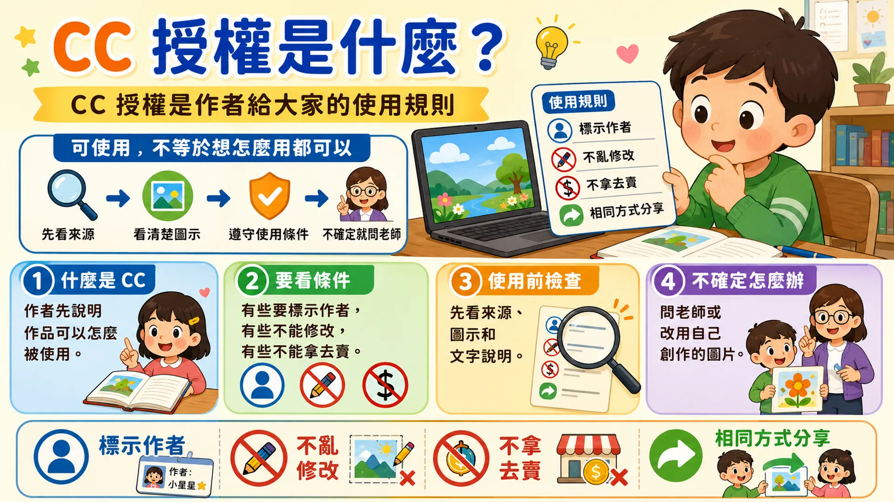

資訊素養
網路上的圖片、音樂、影片和文字也有作者。使用前先看來源、作者與授權。
景點推薦信
到 Google Maps 找公共景點截圖，用 Gmail 同時寄給老師和一位同學。
中英打闖關
看 Week 15 進度分流，延續國語第 11 課和英語 U4 職業句型練習。
技能與課本頁碼對照
Week 16| 本週技能 | 課本頁碼 | 上課怎麼用 |
|---|---|---|
| 網路作品與著作權 | P.80 | 認識圖片、音樂、影片、文字也有作者。 |
| CC 授權條件 | P.81 | 理解可使用仍要看來源、作者與授權規則。 |
| Google Maps 搜尋景點 | P.100-P.106 | 搜尋公共景點，調整地圖、街景或照片畫面。 |
| 截圖與貼上 | P.106-P.107 | 把自己操作出的景點畫面截圖，放進 Gmail 推薦信。 |
| Gmail 與聯絡人 | P.58-P.69 | 建立或使用聯絡人，同時寄給老師和同學。 |
| 中英打闖關 | 國語第 11 課、英語 U4 | 延續語文教材句子，完成本週 5 關練習。 |

先看來源
知道作品從哪裡來，不把來源不明的內容當成自己的。
認識作者
圖片、音樂、影片、文字通常都有人創作。
檢查授權
有 CC 也要看條件，可能要標作者、不能修改或不能商業使用。
不確定就問
不確定能不能用時，問老師，或改用自己創作的內容。
資訊素養小測驗會記錄完成狀態；請登入後再開始作答。
登入後開始小測驗
完成後會寫入學習進度，老師可以看到你已完成。
找公共景點
搜尋公園、圖書館、博物館、車站或世界地標，不搜尋住家地址。
截圖畫面
調整地圖角度後截圖，Windows 可用 Win + Shift + S。
使用聯絡人
若找不到老師或同學，先到 Google 聯絡人建立學校帳號資料。
寄給兩位
Gmail 收件人要同時有老師和一位同學，寄出前再檢查。
正在確認景點推薦任務連結狀態...
推薦信格式
收件人：老師 + 一位同學
主旨：我推薦的景點：__________
內文：老師和同學好，我推薦的景點是__________。我推薦它的原因是__________。這是我在 Google Maps 看到並截圖的畫面。
截圖：貼在信件內文，或用附件加入
提醒：不寄住家地址、不交換私人信箱電話
入門組
使用老師指定或網頁範例景點，完成一張截圖、一句推薦理由，寄給老師和一位同學。
標準組
自己搜尋公共景點，必要時先建立聯絡人。信件要有主旨、問候、景點、理由和截圖。
挑戰組
比較兩個景點後選一個推薦，可加入第二張截圖或補充特色、交通與適合誰去看。
先完成老師指定任務的同學，到這裡接著練習；老師會看 Week 15 進度協助分流。
不能複製貼上。英文大小寫、標點、空格和換行都要一樣。
目前進度：第 1 關開始。
第 1 關
英文暖身
英語 U4 職業單字，先找回手感。
I am a cook.
第 2 關
中文一行
國語第 11 課〈聰明的鼠鹿〉，記得句號。
鼠鹿在河邊遇到了老虎。
第 3 關
英文二行
兩行都要打，問號、逗號、句點和縮寫符號都要一樣。
Is he a teacher? No, he's not.
第 4 關
中文二行
注意逗號、換行和句號。
只有冷靜想辦法， 才可以化解危機。
魔王關
中英混打三行
中文、英文、標點與換行都要對。完成後去看看自己的努力樹。
聰明的鼠鹿跑得遠遠的。 Are you a doctor? No, I'm not.